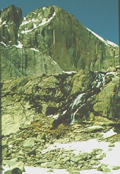

One of the most awesome climbs in the park, yet still very accessible to the beginning climber, Kiener's Route is a Colorado Experience favorite. The route starts at Mills Glacier and proceeds up a 1000 foot couloir known as Lamb's Slide (ice axes and crampons required to climb Lamb's Slide.) Moving off Lamb's Slide, you are led across Broadway, a narrow ledge varying in width from several feet to six inches. The ledge overlooks a sheet of granite plunging down to Chasm Lake far below. Proceeding up from Broadway, you will climb to the summit of Longs Peak following a route requiring climbing gear and climbing technique. Kiener's is one of North America's classic climbs.

Difficulty Level: Beginner to moderate
Time: Allow for one day
Physical stress: Moderate